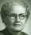
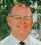
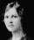
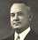
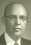

.
You can jump Forward to
Through year 1919 .jpg) ,
or
1920-1929 , or
1930-1939 ,
,
or
1920-1929 , or
1930-1939 ,
or
1940-1950 , or
Walt Remembering , or
Laura's Obituary , or
bottom of page ,
| Relation | Name | Milestone | Location | Died | Location |
|---|---|---|---|---|---|
| Father | Hans Jorgen Hansen [FS Data] | born 1839-01-31 Wed 1866-01-17 | Denmark Van Zandt Co., TX | 1900-09-25 | Cranfills Gap, TX, Buried at St Olaf's Cemetery |
| Mother | Petra (Foss) Hansen [FS Data] [Foss Data] | born 1845-03-10 In USA 1852 | Vestre, Norway Van Zandt Co., TX | 1905-03-20 | Cranfills Gap, TX, Buried at St Olaf's Cemetery |
| Sister | Johanne Marie (Hansen) Gaustad [FS Data] | 1866-04-16 | Four Mile Prairie, Van Zandt Co., TX | 1945-05-21 | Clifton, TX, Buried at St Olaf's Cemetery |
| Sister | Annie Mathilda (Hansen) Jenson [FS Data] | 1872-02-11 | Cranfills Gap, TX | 1952-01-17 | Cranfills Gap, TX, Buried at St Olaf's Cemetery |
| Brother | Charles Hansen [FS Data] | 1887-xx-xx | Cranfills Gap, TX | 1880-xx-xx | xx, TX, Buried xx Cemetery |
| SELF |  Laura Wilhelmina (Hansen) Bronstad Laura Wilhelmina (Hansen) Bronstad[FS Data] | 1873-09-11 | Bosque County, TX | 1950-04-24 | Cranfills Gap, TX, Buried at St Olaf's Cemetery |
| Sister | Cecilia Olave (Hansen) Erickson [FS Data] | 1876-09-05 | Cranfills Gap, TX | 1963-12-21 | Clifton, TX, Buried at Clifton Cemetery |
| Sister | Martha Helen (Hansen) Hastings [FS Data] | 1878-12-14 | Cranfills Gap, TX | 1968-04-05 | Cranfills Gap, TX, Buried at St Olaf's Cemetery |
| Sister | Jennie (Hansen) Jermstad [FS Data] | 1881-01-18 | Cranfills Gap, TX | 1966-12-02 | Clifton, TX, Buried at St Olaf's Cemetery |
| Brother | Ferdinand Hansen [FS Data] | 1886-12-24 | Cranfills Gap, TX | 1942-06-12 | Ft Worth, TX, Buried at St Olaf's Cemetery |
[Foss Data]: Grandma Millie's Family Trees: https://www.genealogy.com/ftm/h/a/n/Earleen-R-Haney/index.html
[FG Data]: Find a Grave data: https://www.findagrave.com/
[FS Data]: Family Search data: https://www.familysearch.org
[LRF Data]: Linton Research Fund data: http://linton-research-fund-inc.com/
[Walt Data]: This site, Walts memories: https://gwbronstad.github.io/Walt-Kin/
| Relation | Name | Born | Location | Died | Location |
|---|---|---|---|---|---|
| Husband |  Gulbrand Olson Bronstad Gulbrand Olson Bronstad[FS Data] | 1856-03-09 | Kirkenaer, Romedal Parrish, Hedermarken, Norway | 1937/07/18 | Cranfills Gap, TX, Buried at St Olaf's Cemetery |
| SELF | Laura Wilhelmina Hansen [FS Data] | 1873-09-11 | Bosque County, TX | 1950-04-24 | Cranfills Gap, TX, Buried at St Olaf's Cemetery |
| Son | Otis Julian Bronstad [FS Data] | 1894-09-26 | Cranfills Gap, TX | 1960-11-14 | Clifton, TX, Buried at St Olaf's Cemetery |
| Son |  Clyde Purnell Bronstad Clyde Purnell Bronstad[FS Data] | 1896-06-20 | Cranfills Gap, TX | 1989-12-26 | Clifton, TX, Buried at St Olaf's Cemetery |
| Daughter | Marie Pernella (Bronstad) Rohne [FS Data] | 1899-06-30 | Cranfills Gap, TX | 1985-05-17 | Ft Worth, TX, Buried at St Olaf's Cemetery |
| Daughter |  Lorine Galinda (Bronstad) Hudson [FS Data] | 1902-07-30 | Cranfills Gap, TX | 1981-04-23 | Holdenville, OK |
| Son |  Homer Hansen Bronstad [FS Data] | 1907-07-13 | Cranfills Gap, TX | 1993-12-05 | Denton, TX, Buried at St Olaf's Cemetery |
| Daughter | Marguerite Christine Bronstad [FS Data] | 1909-07-07 | Cranfills Gap, TX | 1988-05-10 | Pasadena, TX, Buried at St Olaf's Cemetery |
Laura's Father, Hans Jorgen Hansen was a Danish immigrant. Hans's family first settled at Four Mile Prairie, Van Zandt Co., TX. The settlement was troubled, I believe, by malaria. Many early settlers moved on to the Norwegian area in Bosque County, Texas, presumably dryer and less inviting to anopheles mosquitos, the malaria vector.
Laura's Mother, Petra (Foss) Hansen was a Norwegian immigrant who came with her Father, Johannes Olsen Vestrum Foss,(b. Abt. 1810, d. September 21, 1852) and Mother, Berte Marie Pedersdatter Aasmundred Foss,(b. September 10, 1818, d. January 22, 1886).
From Wikipedia
( https://en.wikipedia.org/wiki/Vang,_Innlandet
Vestre Toten
is a municipality in Innlandet county, Norway. It is located in the traditional district of Toten. The administrative centre of the municipality is the village of Raufoss. Other villages in the municipality include Bøverbru, Eina, and Reinsvoll.[4]
The 251-square-kilometre (97 sq mi) municipality is the 287th largest by area out of the 356 municipalities in Norway. Vestre Toten is the 88th most populous municipality in Norway with a population of 13,635. The municipality's population density is 58.7 inhabitants per square kilometre (152/sq mi) and its population has increased by 4.9% over the previous 10-year period.[5][6] General information
Vestre Toten was established as a municipality on 1 January 1838 (see formannskapsdistrikt law). On 1 January 1875, there was a border adjustment between Østre Toten Municipality and Vestre Toten Municipality. On 1 January 1908, the municipality was divided into three parts: Kolbu Municipality (population: 2,412) in the southeast, Eina Municipality (population: 1,173) in the southwest, and Vestre Toten Municipality (population: 4,027) in the north. During the 1960s, there were many municipal mergers across Norway due to the work of the Schei Committee. On 1 January 1964, the following areas were merged to form a new, larger Vestre Toten Municipality:[7]
- all of the old Vestre Toten Municipality (population: 9,113)
- the Sørligrenda area of Vardal Municipality (population: 87)
- all of the old Eina Municipality (population: 1,591)
- the area on the south end of the lake Einavatnet from Gran
- Municipality (population: 12)
Name
The municipality is named Vestre Toten after the district of Toten (Old Norse: Þótn). The name is identical with the word Þótn which has an uncertain meaning, but it might be from the word þóttr which means "the pleasant district" or "something one likes". The parish of Toten was divided into two parts (eastern and western) in 1825 and the first word, vestre was added to signify that this was the "western" part, thus the name was Vestre Toten which means "(the) western (part of) Toten".
Exerpts from "Four Mile" by Martin T. Jenson, to celebrate the 125 anniversary of Four Mile church in 1972.Included in the book are letters to Reverend Jenson from V.A. Mohr, Southern District of the American Lutheran Church, Austin, TX; Kent S. Knutson, The American Lutheran Church, Minneapolis, Minnesota; Arne Gunneng, Ambassador of Norway; Lyndon B. Johnson, former President of the United States, Austin, Texas and Richard Nixon, President of the United States.
Pastor Jenson writes: "Take for example the Johan Foss family.They came in 1852.He was killed by a rattlesnake in 1853.His widow and two of her three children stayed at Four Mile till 1872 or 1873.When the Foss descendants came together for their first reunion at Four Mile Church in 1967, there were over two hundred living members of the tribe throughout the United States and Canada, all claiming allegiance to some Christian Church.these included pastors, doctors, nurses, teachers, lawyers, farmers, scientists, pharmacists, secretaries, missionaries and almost every one of the more common profession of our time."
Laura item 001
Through year 1919 .
You can jump back to
top of page .jpg) , or Forward to
1920-1929 , or
1930-1939 , or
1940-1950 , or
Walt Remembering , or
Laura's Obituary , or
bottom of page ,
, or Forward to
1920-1929 , or
1930-1939 , or
1940-1950 , or
Walt Remembering , or
Laura's Obituary , or
bottom of page ,
1892-11-21
Palma Pauline Gaustad, Laura's niece by Marie (Hanson) and Evan Gaustad is born.
1893-11-30
Laura Wilhelmina Hanson weds Gulbrand Olson Bronstad
1894-03-18
Alvin Lawrence Bronstad Bosque, Gulbrand's nephew (by C. O. and Martha Bronstad),is born in Bosque CO., TX.
1894-09-26
Otis Julian Bronstad, first child of Gulbrand Olson Bronstad and Laura Wilhelmina (Hanson) Bronstad, is born
1895-06-18
Jorgen Gaustad, Laura's nephew by Marie (Hanson) and Evan Gaustad is born.
1896-06-20
Clyde Purnnell Bronstad, second child of Gulbrand Olson Bronstad and Laura Wilhelmina (Hanson) Bronstad, is born
1896-06-20
Jesse Justin Jenson , Laura's niece by Matilde (Hanson) and James Thomas Jenson is born.
1896-09-06
Olga Belle Bronstad, 11thchild of Martha & Christian O Bronstad, is born,
1897-02-04
Agnes Constance Bronstad, Gulbrand's niece (by brother Otto and Anna (Nesteby) Bronstad),is born in Waco, TX.
1898-01-06
Lillian Adelia Bronstad, Gulbrand's niece (by brother Otto and Anna (Nesteby) Bronstad),is born in Waco, TX.
1898-02-22
Sylvester Palmer Jenson, Laura's nephew by Matilde (Hanson) and James Thomas Jenson is born.
1898-06-07
Matilda Ellen Gaustad, Laura's niece by Marie (Hanson) and Evan Gaustad, is born.
1898-10-07
Viola Cecelia Bronstad, 12thchild of Martha & Christian O Bronstad, is bornin Bosque County.
1899-06-23
John Ennis Erickson, Laura's nephew by Cecilia (Hanson) and Emil Erickson is born in Bosque County
1899-06-30
Marie Pernella Bronstad, third child of Gulbrand Olson Bronstad and Laura Wilhelmina (Hanson) Bronstad, is born.
1899-11-17 {Groom Index}
Jermstad, Charlie G wed Jennie Hanson, book G page 249
Jennie Hanson was Laura (Hansen) Bronstad's youngest sister. The Clifton record, and other records gives us glimpses into the man Jennie wed, Charles Gustave Jermstad (1879-11-23 - 1933-08-08). He seemed to embrace many large, radical changes in his life; some will be noted here as the record unfolds. Jenny's life looked unusually stress filled.
Well before her death in 1950, Laura had asked her second son, Clyde, my Father, to look in on Jennie when he could. In about 1952, Clyde took me on one of his visits with Jennie. Jennie was employed as a housekeeper for one of the men who resided on the grounds of the Fort Worth oil refinery near the corner of 28th Street and Sylvania.
Jennie welcomed us with spice cake with butter creme icing. This 12 year old found it wonderful; a food experience never repeated, though my girth affirms I have not failed for lack of trying.
Wholly without credentials in the issue, I have inferred Charley was troubled with Bipolar disorder. That his emotional life was a whipsaw of ups and downs.
There is no remote wish to condemn, but rather to understand and sympathize.There is a thread to this argument, it is illuminated thus: with a green-yellow-red gradient, or, like the bipolar experience, a reversal, a red-yellow-green gradient.
1900-04-19
Tilden Marion Jenson, Laura's nephew by Matilde (Hanson) and James Thomas Jenson is born.
1900-05-17
Munroe Ludwig Gaustad, Laura's nephew by Marie (Hanson) and Evan Gaustad, is born.
1900-07-22
Andreas"Andrew" Olson, Gulbrand's oldest brother, dies in Norway
1900-09-25
Hans Jorgen Hanson, Laura's Father, dies in Bosque, TX.
1900-10-22
Hilma Pamela Jermstad, Laura's niece by Jennie (Hanson) and Charles G Jermastad, is born.
1902
Klara Gaustad, Laura's niece by Marie (Hanson) and Evan Gaustad, is born.
1902-03-12
Odin Albert Bronstad, Gulbrand's nephew (by brother Otto and Anna (Nesteby) Bronstad), is born in Waco, TX.
1902-07-30
Lorine Gelinda Bronstad, fourth child of Gulbrand Olson Bronstad and Laura Wilhelmina (Hanson) Bronstad, is born.
1902-08-02
Palmer Pernell Erickson, Laura's nephew by Cecilia (Hanson) and Emil Erickson is born in Norse, Bosque TX.
1902-10-15
Hilma Pamela Jermstad, Laura's niece by Jennie (Hanson) and Charles G Jermastad, dies.
1902-12-19
Martin Thomas Jenson, Laura's nephew by Matilde (Hanson) and James Thomas Jenson is born.
1903-08-04
Odin Talbott Jermstad, Laura's nephew by Jennie (Hanson) and Charles G Jermastad, is born.
1904-01-24
Palma Pauline Gaustad, Laura's niece by Marie (Hanson) and Evan Gaustad, is born.
1904-02-01
Florence Pauline Gaustad, Laura's niece by Marie (Hanson) and Evan Gaustad, is born.
1904-10-30
Pearl Salida Bronstad, Gulbrand's niece (by brother Otto and Anna (Nesteby) Bronstad), is born in Waco, TX.
1905-02-20
Petra Foss, Laura's Mother dies.
1905-12-26
Jorgen Jenson, Laura's nephew by Matilde (Hanson) and James Thomas Jenson is born.
1905-12-26
James Jenson, Laura's nephew by Matilde (Hanson) and James Thomas Jenson is born.
1906-11-05
Christine Christensdatter Bronstad, Gulbrand's Mother, dies in Norse, Bosque, Texas
1906-01-03
Jorgen Jenson, Laura's nephew, dies.
1906-02-09
Rosa Lee Hastings, Laura's niece by Martha Helen (Hanson) and Thomas Newman Hasting is born.
1906-08-04
Clarence Emil Erickson, Laura's nephew by Cecilia (Hanson) and Emil Erickson is born in Norse, Bosque TX.
1906-08-22
Klara Gaustad, Laura's niece by Marie (Hanson) and Evan Gaustad, is born.
1906-08-22
Florence Pauline Gaustad, Laura's niece by Marie (Hanson) and Evan Gaustad, is born.
1907-01-16
Ferdinand Palmer Gaustad, Laura's nephew by Marie (Hanson) and Evan Gaustad, is born.
1907-01-24
Menlo F A Jermstad, Laura's nephew by Jennie (Hanson) and Charles G Jermastad, is born.
1907-07-15
https://www.familysearch.org/en/tree/person/LYJB-95MElmer Julian Bronstad, Gulbrand's nephew (by brother Otto and Anna (Nesteby) Bronstad), is born in Waco, TX.
1907-07-17
Homer Hansen Bronstad, fifth child of Gulbrand Olson Bronstad and Laura Wilhelmina (Hanson) Bronstad, is born.
1909-02-04
Rev. Lawrence C Jensen, Laura's nephew by Matilde (Hanson) and James Thomas Jenson is born.
1909-07-07
Marguerite Christine Bronstad, sixth child of 53 year old Gulbrand Olson Bronstad and 36 year old Laura Wilhelmina (Hanson) Bronstad, is born.
1909-09-09
Jewell Pauline Hansen, Laura's niece by Gina and Hans Ferdinand Hansen, is born.
1910-04-15 Bank for Cranfills Gap.
The charter, authorizing G. O. Bronstad, W. T. Tergerson, Dr. Colwick and others to do a general banking business at Cranfills Gap under the laws of the state has been granted.
This bank will be a $10,000 proposition and the Record sees no reason why it should not be a success.
1910-05-06 {Meridian News}
Dr. T. C. Coston of Womack was called back to the Cranfills Gap community last Saturday to see a patient, and as he was making the trip in his auto, an invitation to the Record man to get in and make the trip with him was gladly accepted as we have long desired to make the good people of that thriving little city and community a visit, but not having such an opportunity extended us before. We had lived in Clifton nine years on the same job without having the pleasure of seeing this magnificent country so close to our home. From Clifton to Cranfills gap are some of the prettiest country homes, best kept farms and most thriving class of citizens it has been our pleasure to visit.
The people of Cranfills Gap know just how to treat a fellow to make him glad he is living in such a country; that spirit of hospitality was in evidence with every person we met.
We found the immense mercantile establishment of G. O. Bronstad doing a regular city rush of business; also the drug store of Colwick & Cooper in a splendid new building and the stock up-to-date and the business in a thriving condition.
A big base ball game between Hico and the home boys was to be pulled off that afternoon, and we could not remain long enough to yell ourselves hoarse for the boys on the Bosque side of the line. We understand the score stood 11 to 2 in favor of the Gap.
It was indeed gratifying to us to pass these lovely country homes, and being told by the Doctor who lived in each one, to remember that every one on trip of over twenty miles, as a regular reader of the Record and Dallas Semi-weekly News were the main papers, as the highest number of papers sent to that post office by any other Bosque county office was three, and one of them remained dead in the office.
The new bank building for that little city was to be started this week and rushed to completion when it will be opened and run by the thriving citizens of that place; and we were very glad to learn that our old friend John L. Huse, who is at present bookkeeper for G. O. Bronstad, had been honored with the Cashiership, as he will make a good one, and a man that has already by his sterling quality and honest dealings won the confidence and admiration of that people.
1910-05-20
G. O. Bronstad was in Waco on business this week.
1910-06-10
G. O. Bronstad , the genial merchant spent Sunday in Clifton.
1910-07-29
Mr. Hildebran is with G. O. Bronstad this week demonstrating the latest leverless cultivator. The farmers of this community are of the opinion that it is a useful invention.
1911-06-20
Wilma Adeline Hansen, Laura's niece by Gina and Hans Ferdinand Hansen, is born.
1911-12-09
Homer Palmer Hastings, Laura's nephew by Martha Helen (Hanson) and Thomas Newman Hasting is born.
1912-03-19
Selma Petra Jensen, Laura's niece by Matilde (Hanson) and James Thomas Jenson is born.
1912-06-11
Alma Marie Erickson, Laura's niece by Cecilia (Hanson) and Emil Erickson is born in Clifton, TX.
1912-06-28
Otto Clarence Bronstad, Gulbrand's nephew (by brother Otto and Anna (Nesteby) Bronstad), is born in Waco, TX.
1912-08-25
Charles Hanson Jermstad, Laura's nephew by Jennie (Hanson) and Charles G Jermastad, is born.
1913-02-28
G. O. Bronstad and Earnest Schwalbe have recently purchased new Ford touring cars.
1913-10-24
G. O. Bronstad's rock building will soon be completed.
Mr. Ole Foss of Seattle, Wash., is here visiting his sister, Mrs. M. Larson, and other relatives. It has been forty years since he had met his sister.
Mr. Ole Foss, my great great uncle on my Father's Mother's side is an interesting man.
The youngest post master of Van Zandt County Texas, was probably in that position having learned a bit of reading in Norway before alighting in the benighted lands of Four Mile, Texas, circa 1852. The massive misfortune of the U. S. Civil War swept Ole up into Confederate Cavalry, ineptly deployed by Confederate Lt. Gen. John C. Pemberton who retreated into Vicksburg, which was quickly invested by U. S. Grant who knew better than we do now what one does with both military force and ethanol.
After Pemberton's surrender, Ole, not yet 20 years of age, chose joining the Union forces, enlisting in a Wisconsin Cavalry which was manned by some Wisconsin Norwegians. Few twenty year olds, perhaps none of us, could have forseen that his choice to join the Union would mean he could not return to Four Mile, Texas after organized hostilities ceased. In the South, hostilities fester now for over a century.
1914-09-17
Homer Barney Erickson, Laura's nephew by Cecilia (Hanson) and Emil Erickson is born in Clifton, TX.
1914-10-16
Mrs. G. O. Bronstad entertained the Ladies Aid Society Wednesday evening. . . .
1914-11-01
G. O. and Laura's first son, Otis Julian Bronstad weds  Selma Tergerson, daughter of W. T. and Anna Tergerson.
1914-11-13, Cranfills Gap News [Bronstad Tergerson Wedding]
Last Sunday evening at 5 o‘clock at the St. Olaf Church Rev. H. W. Estrem pronounced the words that made Otis J. Bronstad and Miss Selma Tergerson husband and wife in the presence of large party of relatives and friends. Immediately after the ceremony the crowd returned to the home of the bride where a reception awaited them. The groom is the son of Mr. and Mrs. G. O. Bronstad and has been a citizen of this town all his life. The bride is the daughter of Mr. and Mrs. W. T. Tergerson of this city and was raised in the Mustang community. Both are well known and have the respect and esteem of all who know them. . . .
. Mrs. M. Sorenson of the Norse country spent Wednesday night with Mrs. G. O. Bronstad.
1915-01-10
Charley Jermstad has moved his stock of groceries to his old meat market place and had it refitted and rearranged and has about as neat and handy a place of business as you will find anywhere.
1915-01-16
Evan C Gaustad, Laura's nephew by Marie (Hanson) and Evan Gaustad, is born.
1915-03-12
Charley Jermstad traded for T. C. Jermstad's auto several days ago.
1915-07-30
N. E. Lovelady was out from Clifton Tuesday closing a deal with Charley Jermstad whereby the aforesaid Charley becomes owner of the Lovelady business at this place.
Mr. and Mrs. Charley Jermstad went down to Temple Thursday. We understand Mrs. Jermstad will enter a sanitarium for treatment. She may have to undergo an operation.
Chas. Jermstad went to Clifton Wednesday.
1915-08-16
G. O. Bronstad, wife and daughters, Misses Marie, Loraine and Margary (sic) and son, Clyde, attended the Lutheran Circuit at Clifton Monday. . .
1915-08-16
Charley Jermstad and children went down to Temple Thursday to see Mrs. Jermstad who is in a Sanitarium at that place. . . .
Mat Johnson is putting some paint on Charley Jermstad's house. . .
1916-01-21
C. G. Jermstad has sold his stock of groceries to G. O. Bronstad. He will continue the cream business.
Charley Jermstad was G O Bronstad's Brother-in-Law, their wives were sisters: Laura Hansen and Jennie Hansen. Charley seemed fated to fail to find his forte. Likely this made Jennie's life harder.
1916-02-11
Last Monday N.E. Nelson bought the house and lot and cream business from Charley Jermstad. He will continue in business at the old stand where he will continue to buy cream and produce., . . .
1916-07-14
G. O. Bronstad, wife and three children, Clyde, Homer and Marjary(sic) went down to Waco to visit relatives Sunday.
1916-10-13
Charley Jermstad has opened up a meat market in the Ford building. . . .
1917-02-16
Charley Jermstad is driving a new Overland G. O. Bronstad will handle the product of the Cranfills gap Roller mill.
1917-04-06
Mr. and Mrs. C. G. Jermstad and Mr. and Mrs. S. C. Jermstad attended the stock show at Fort Worth last week, also visited Dr Carlson and family They reported a real good time.
1917-04-18
Francis Lee Hansen, Laura's niece by Gina and Hans Ferdinand Hansen, is born.
1917-05-04
The doctors removed a tumor from little Miss Margery Bronstad's head this morning.
1917-09-28
Charles Jermstad is holding down a job in [G. O.] Bronstad's store.
1917-10-19
Charlie Jermstad and son Oden, are in Temple where the young man is to undergo an operation.
1917-11-23
"Ole Foss who has been visiting relatives and friends in this section for several months, has returned to his home in Tacoma, Washington"
1918-03-30
Dorothy Marie Hastings, Laura's nephew by Martha Helen (Hanson) and Thomas Newman Hasting is born.
1918-05-03
Oscar Lundbert of Walnut Springs, representing the Southwestern Tire Co was here last week and closed a deal with C. G. Jermstad whereby Charley becomes agent at this place
1918-07-26
Last week Belvin Rogstad traded his business property in the Gap to Charley Jermstad for a farm near Hico. Charley also received other consideration.
1919-01-24
Clyde Bronstad returned yesterday, clothed in a neat fitting uniform and armed with an honorable discharge.
1919-09-26
John and Willard Murphree, Charley Jermstad, Clyde Bronstad, Armind Sather, Near Rude and many others also went out to the oil fields last week.
1919-12-26
Clyde Bronstad has returned from Swensondale
Context of Item 001
1907-06-21 Clifton Record
Norwegian Women Get The Vote . . .
1911-07-14 Crisis in affairs of Texas
vitally involves its welfare
The Weapon of Religious Terrorism, Ostracism and Outlawry
Has Been Brought Into Use to Force Statewide Pro-
hibition Upon the People of this Great State
It is the conviction of the signers of this advertisement that the present prohibition campaign has produced a crisis in the affairs of this State that vitally involves its welfare, and that would arouse the concern of every man that cherishes a regard for its political integrity and the peace and happiness of its people. We believe it to be a public duty to invite your calm judgment to a consideration of its merits and invoke your sturdy resolution to resistance of its disastrous consequences.
At the outset of the campaign it was a common belief that the prohibition movement involved only an effort upon the part of its advocates to bring about the prohibition of the sale of intoxicants in Texas by means of a constitutional amendment. Good faith and patriotic purpose were conceded to those who believed in the virtue of this method of dealing with the question and who were proposing it for incorporation into the organic laws; and all [illegible]
With an intolerance breathing the fanatical spirit of the middle ages and abandon that marks a desperate cause they have denounced every man who does not supinely subscribe to their theory of the question-however opposed he might be to the saloon and the liquor traffic. And however splendid a record of patriotism and devotion to the moral welfare of the State his life might present-as belonging to “the saloon crowd” or as a member of “a corrupt whiskey ring.”
Emboldened by their own license and not content with having flaunted this insult on the names of thousands of as good and true men as have any commonwealth, they have openly proclaimed, in effect that should they prevail in the contest there will be [illegible]
1911-07-28 The Texas Negro
The Texas negro is primarily a farmer and the man has made little progress in commerce, mechanics science and art. Freedom has carried with it responsibilities which have weighed heavily upon the colored man and after a lapse of half a century of freedom they are still the “drawers of water and the hewers of stone”. The young are dependent upon the white man for their education and the aged and infirm are his wards.
The Slave Negro.
In 1860 there were 158,595 slaves in Texas registered for assessment at $106,688,000, giving an average value per slave all ages of $672.00. The assessed value of all land in Texas at that time was $122,000.000 [ some digits illegible and unguessable]. The slaves were almost equal in value to all farm property constituting 36 per cent of the taxable wealth of the state. The state and county revenues derived from taxing slaves annually was approximately $1,000,000.
Taking into consideration the percent of true value of property rendered for assessment in 1860, and the sale of interest prevailing at that time, we find the Negroes of all ages producing a net revenue of $100 each per annum. Since the war the colored race in Texas has been able to accumulate approximately $75,000,000 which is equivalent to $2 each per annum while masters of their own destinies against a net production of $100 per annum when under the direct supervision of the white man.
The Free Negro.
In 1900 the census shows 620,772 Negroes in Texas. They owned 65,556 farms valued at $56,2339,240. Their farms averaged fifty-nine acres each although fifty-five Negroes owned 1000 acres and over. Over 50 per cent of our negro farmers raised cotton and {?} per cent of all the farmers in Texas are Negroes.
There are 184,000 negro children of scholastic age in Texas who receive from our state school fund $6 per annum per scholar. We have 2,471 negro school houses and the education of the negro costs $1,000,000 per annum. The average salary of the teacher in colored schools is $45.88. The school tax paid on property owned by the negro is approximately $60,000 per annum, leaving a net amount of $940,000 per annum given to the negro annually for educational purposes.
The educational and industrial advantages of the negro in Texas excel those of any other state
This kind of “us-vs.-them” attitude divides America to this day (2008-07-20).
The division stained the original Constitution of The United States, branding a Negro 60% of a man for purposes of representation at the national level and treating the Negro as a unique kind of property that all men of all states were obliged to return to their owner, unlike horses that could find freedom on western ranges, constitutionally insuring no Negro could gain his freedom by flight save those strong and resourceful enough to reach Canada or Mexico or the grave.
Moreover the Constitution gave a grace period to slave trade, that peculiar institution that ennobled the profitable practice of making a man and his children permanent hostages to their lives.
This “us-vs.-them” attitude dividing white and black survived the Civil War in weaker but still robust forms like State laws calling for separate but (shabby pretense) equal facilities.
As a child I needed no instruction to avoid the “colored only” water fountain at Leonard’s Department Store. I’d never been that thirsty except after many hours trekking in mid summer sun. The Fort Worth Negro high school (Dunbar?) hard by new ploughed Interstate 35 suggested more down-in-the-mouth, under-funded institution than the shady academes I attended.
The first time I voted, I voted in Texas and paid my poll tax. Central Texas Congressman Pogue implicitly affirmed in the 1940’s that the role of the poll tax was to suppress the Negro vote, and if scruffiest of whites could not vote either, oh well.
Truman, I think, saw this division threatened us. It was hard for “supermen” Nazis to usefully exploit this division, but this division was a piece of cake for Stalin. It was truly injustice that America had not righted, for all its hyper-ventilatingly vaunted Christian values for all its existence 1776 to 1946.
The greatest threat of our hypocrisy to our integrity was in military loyalty, so Truman did what he could to integrate the armed forces. During my stint in the Army (1967-1969), I saw fairly effective, thanks in part to the strength of military discipline, but still incomplete integration.
The public sector has been tougher. Many Southern Churches have been useless lies of vaunted but unpracticed virtues. Sunday remains the most segregated day of the week.
1917-03-16
10,000,000 dead in European War.
1917-04-13
Refused to Take Any Notice of the American Flag
Fort Worth, Texas, April 5. -- John J. Sheppard and Raymond Dacy in their twenties when arraigned in police court this morning on a charge of disrespect to the American flag were given an opportunity to salute the flag and escape punishment. They refused; however, to budge from their seats though a big flag was draped over the police judge's desk in full view of the prisoners. This was called to their attention twice. Judge Barker find (sic) them $225 each. Sheppard has served in the regular army. The technical charge was drunkenness and disturbing the peace.
1917-04-27 Enemy Aliens At University Must Step Out
Austin, Texas, April 20.-- Enemy aliens will not be retained on the faculty of the University of Texas.
This had been revealed in the resignation of Dr. E. G. Boese, geologist in the Bureau of Economic Geology. He is a German reservist. His resignation has been received from Mexico where he went some time ago to investigate certain oil properties.
The decision may result in the dismissal of Dr. Eduard Prokosch, head of the School of Germanic languages. He is in Wisconsin, where he went several weeks ago. Word is being awaited, whether he is a fully naturalized citizen of the United States.
Prof. Charles Knizek, instructor in Slavic languages, formerly was a citizen of Austria-Hungary, but he has been naturalized.
All of these facts became known as a result of a conference between Dr. Vinson, president of the University, and Senator Clark.
The conference was in reference to a rider with the appropriations bill providing that none of the money may be paid directly, or indirectly, to any person not a citizen of the United states or of Texas.
Dr. Vinson has expressed the wish that the rider be chanted to refer only to enemy aliens.
Laura item 002
1920-1929 . . . . . . . . . . . . .
You can jump back to
top of page , or
Through year 1919 , or Forward to
1930-1939 , or
1940-1950 , or
Walt Remembering , or
Laura's Obituary , or
bottom of page ,
1920-02-13
Clyde Bronstad and Clarence Perry left Friday for the oil fields.
1920-07-16
Clyde Bronstad came in last week from Swensondale where he has been engaged in the garage business for some time, to visit home folks.
1920-08-13
G. O. Bronstad went down to Waco Friday to have an operation for hernia caused by heavy lifting at Clifton a few days ago. Mrs. Bronstad, who accompanied him, returned home Monday and reports that he is getting along nicely.
1921-01-07
Clyde Bronstad spent the holidays in this community.
1921-03-04
Clyde Bronstad came in from the oil fields Saturday night to see home folks and friends.
1921-06-18
G. O. and Laura's first daughter, Marie Pernilla Bronstad weds  Christian Ludvig Rohne, son of Evan Paulsen and Marianne Rohne.
1922-04-14
Charley Jermstad has fixed up his meat market at the Model Grocery and will for the present have meat there on Wednesdays and Saturdays.
1922-05-19
Charley Jermstad has leased the market in Frank Sormrude's cafe at Clifton.
1922-11-03
Charley Jermstad took charge of the City Garage Monday, Fred Jenson left, going in the direction of Clifton. Fred had given satisfaction as a garage man, so far as we know.
1928-03-23
Mrs G. O. Bronstad, Miss Marguerite Bronstad, Mr. and Mrs. Chris L. Rohne and daughters, Lo Verne and Geraldine, were Waco visitors Monday.
Context of Item 002
Laura item 003
1930-1939 . . . . . . . . . . . . .
You can jump back to
top of page , or
Through year 1919 , or
1920-1929 , or Forward to
1940-1950 , or
Walt Remembering , or
Laura's Obituary , or
bottom of page ,
1930-06-13
Announcements were received here last week announcing the marriage of Miss Lorina Bronstad to  Mr. Douglas Hudson of Ada, Okla. Ms. Hudson is a daughter of Mr. and Mrs. G. O. Bronstad of this city. She is a graduate nurse of the Providence Sanitarium and at the time of her marriage, was supervisor of the Ada Hospital. We have never met Mr. Hudson, but we are sure he is a good man like all grooms are.
1931-12-25
Mr. and Mrs. Chris L. Rohne and daughters Lo Verne, Geraldine, and Marynell and Mrs. G. O. Bronstad and Marguerite Bronstad were in Waco Thursday of this week.
1932-06-03
Mrs. Douglas Hudson and daughter, Carolyn Sue of Ada, Oklahoma, came in Sunday to visit with her parents, Mr. and Mrs. G. O. Bronstad. . . .
1932-08-26
Mr. Otto Bronstad of Waco was here last week visiting with his brother G. O. Bronstad.. . . .
1932-09-09
Mr. G. O. Bronstad had as his guests Sunday morning two of his old friends, Dr. John Murphy of Temple and Dr. Jim Barnell of Johnson city. These two men were once residents of this city.
1932-09-30
Knudson-Bronstad wedding
Wedding bells chimed again in this city last Sunday evening, Sept. 11th when Miss Travis Knudson became the bride of Mr. Homer Bronstad . The wedding took place in the St. Olaf Lutheran Church at 6:30 o’clock with Rev. J. A. Urnes officiating, and with the sanctuary filled to its capacity with relatives and friends. A reception was given at the home of the bride’s parents, Mr. and Mrs. K. M. Knudson after the ceremony, to a host of relatives and friends.
1933-02-10
Mr. and Mrs. Douglas Hudson and little baby, Sue, came in Friday from Ada, Okla., to visit in the home of her parents, Mr. and Mrs. G. O. Bronstad, and other relatives and friends. Mrs. Hudson will be remembered as Miss Lorene Bronstad and her friends can only be counted by those who know her. . . .
1933-02-24
Mr. and Mrs. Douglas Hudson and little baby, Sue, who have been visiting in the home of her parents, Mr. and Mrs. G. O. Bronstad, for the last two weeks, returned to their home in Ada, Okla., last Monday, going by way of Waco. Her father accompanied them to Waco.
1933-08-17 The Mullin Enterprise
HAMILTON, Charlie G Jermstad, a farmer who resided near meridian, died at the Hamilton sanitarium at about 13 o'clock Tuesday, some two hours after being brought to the hospital with self inflicted pistol shot wounds in the head.
1935-03-15
Mr. G. O. Bronstad celebrated his 79th birthday Sunday of this week. The children and their families, who live here, and other relatives enjoyed a dinner given by Mrs. G. O. Bronstad at the Bronstad home. Mr. Bronstad is one of our beloved and highly respected citizens. He has been in business here over 40 years and he never misses a day from "the store" even now. . . .
1935-05-31
Mrs. Andrea Nelson Dies At Her Home In Waco
Mrs. Andrea Nelson, age 77, died at her home, 1416 North Twelfth St., Waco, Texas. at 7:15 a. m. Wednesday, May 29, and funeral and interment services were conducted Thursday.
Survivors are three sisters: Mrs. Pemila [sic] Anderson of Clifton; Misses Carrie and Syverina Bronstad of Waco; two brothers, Otto Bronstad of Waco, and G. O. Bronstad of Cranfills Gap.
Born in Norway, Mrs. Nelson came to the United states many years ago; making her home in Waco practically ever since. A number of relatives from here and Cranfills Gap attended the funeral services.
1936-04-24
Menlo F A Jermstad", nephew of Laura Bronstad was fatally poisoned by his wife, Clomer (Allen) Jermstad near Meridian, Bosque County, TX.
1936-07-31
Mr. and Mrs. W. T. Walton made announcement this week of the marriage of their daughter, Mrs. Louise Walton Holbrook  to Mr. Clyde Bronstad. The wedding ceremony was solemnified in the Lutheran church at Waco on Sunday,July 19.
The young couple spent their honeymoon in Galveston and in travelling through the coast country. They are now at home in Cranfills Gap, where Mr. Bronstad is successfully engaged in the grocery business. At present they are occupying apartments in the Meeks home, but Mr. Bronstad plans to build a beautiful new home in the near future.
Mrs. Bronstad, the former Miss Louise Walton of Hamilton, is a memeber of the faculty of the Cranfills Gap public school, one of the best institutons in this section of the state. She entered the school last year as a teacher and was re-elected. She is highly educated, being a graduate of the North Texas State Teachers College and well trained for her work, and is universally popular in Cranfills gap and surrounding country. she is gracious in manner, and is attractively accomplished and is a charming addition to Cranfills gap society circles.
The groom is a son of Mr. and Mrs. G. O. Bronstad, one of the representative families of long time residence in Cranfills gap. He is successful in business and is highly esteemed by a legion of friends to whom his new . . .
to Mr. Clyde Bronstad. The wedding ceremony was solemnified in the Lutheran church at Waco on Sunday,July 19.
The young couple spent their honeymoon in Galveston and in travelling through the coast country. They are now at home in Cranfills Gap, where Mr. Bronstad is successfully engaged in the grocery business. At present they are occupying apartments in the Meeks home, but Mr. Bronstad plans to build a beautiful new home in the near future.
Mrs. Bronstad, the former Miss Louise Walton of Hamilton, is a memeber of the faculty of the Cranfills Gap public school, one of the best institutons in this section of the state. She entered the school last year as a teacher and was re-elected. She is highly educated, being a graduate of the North Texas State Teachers College and well trained for her work, and is universally popular in Cranfills gap and surrounding country. she is gracious in manner, and is attractively accomplished and is a charming addition to Cranfills gap society circles.
The groom is a son of Mr. and Mrs. G. O. Bronstad, one of the representative families of long time residence in Cranfills gap. He is successful in business and is highly esteemed by a legion of friends to whom his new . . .
1936-11-20
Mr. G. O. Bronstad is seriously ill. We trust we will be able to report much improvement in his condition at the next writing.
1936-12-25
Mr. and Mrs. Otis Bronstad were business visitors in Waco Monday of this week. Miss Carrie Bronstad accompanied them on the down trip, returning to her home in Waco after spending several weeks in the home of her brother and wife, Mr. and Mrs. G. O. Bronstad.
1937-07-23
G. O. Bronstad Bosque Pioneer, Passes Away.
G. O. Bronstad, pioneer Bosque County citizen, died at his home at Cranfills Gap, Sunday, July 19, 1937, at about 1:45 p. m. Funeral services were conducted Monday afternoon at the St. Olaf Lutheran Church with interment in the St. Olaf Cemetery.
Mr. Bronstad was born March 9, 1856, in Romedal, Hedemarken, Norway. In 1874, at the age of 18, he emigrated to the United States, coming direct to Bosque County, Texas, where he joined his brother, C. O., at Valley Mills. Here in Bosque County he at once made his home and in due time adopted this country as his own. During his long life he has been an active and contributing citizen.
From 1874 to 1886 he lived successively at Valley Mills, Norway Mills and Morgan, engaging in business and learning merchandising. In 1886 he moved to Cranfills Gap, and opened his business concern in Cranfills Gap. Thus Mr. Bronstad successfully rounded out more than fifty years in business in this one location.
In the land of his nativity he was baptized, and after proper training, was confirmed in the Lutheran Church. To this faith, confessed early in life, he remained true to the end.
This now departed highly respected citizen, lived a quiet, unassuming life, sincere in spirit, sympathetic, generous, and cheerful. In spite of severe experiences in business, he remained of sympathetic and kindly nature, giving service to his friends from far and near. All men were greeted with a smile in the Bronstad Store.
Due to the absence of his pastor, Rev. W. J. Maakestad, Rev. P. E. Thorson of Norse conducted the funeral services, assisted by Rev. O. T. Boe of Clifton and Rev. Farmer, Cranfills Gap. Inspiring music was furnished by St. Olaf Male Quartet, and by Mrs. Troll and Miss Knudson in a vocal duet.
Beside his wife, he leaves six children, Otis, Clyde, and Homer, Margaret, Mrs. C. L. Rohne and Mrs. Douglas Hudson. These all reside at Cranfills Gap except Mrs. Hudson, who lives in Holdenville, Okla. He is also survived by one brother, Otto, of Waco, and three sisters, Carrie and Syverine Bronstad of Waco, and Mrs Pernella Anderson, Clifton.
The large gathering of sorrowing friends and relatives that overflowed the spacious church was something of an indication of the high esteem in which Mr. Bronstad was held. Representatives from every section of Bosque County, from Hamilton and Coryell Counties, came to pay tribute to a good friend, a christian gentleman, an high-class merchant, a man.
1937-12-19
The G. O. Bronstad & Son Store has just installed a nice up to date electric refrigerator.
1938-01-07
Mr. and Mrs. Otis Bronstad, Mrs. Chris Rohne, Mrs. G. O. Bronstad, Homer Bronstad and Clyde Bronstad went to Waco last Tuesday to attend the funeral of Miss Syverine Bronstad. Miss Bronstad passed away at her home in Waco on Monday. She was the sister of the late G. O. Bronstad.
1938-02-18
Bronstad's Store is planning its fifty-first anniversary celebration the last week in February 21–26.
1938-03-18
Mrs. G. O. Bronstad and daughter Margret; Mrs. Chris Rohne and daughters, La Verne and Mary Nell; Mr. and Mrs. Homer Bronstad, Mr. and Mrs. M. J. Bertelsen and daughters, Margie Lou and Mrs. Leroy troll were business visitors in Waco last Saturday.
1938-04-22
Last Sunday, April 17, was an honor day for Mrs. Mary Gaustad, Immediately after Easter service at the St. Olaf Lutheran Church was concluded, relatives gathered at Mrs. Gaustad's home with well-filled baskets to help celebrate her birthday. She was seventy-two years old. In the afternoon cakes, coffee, iced tea were served. Those who spent the day with Mrs. Gaustad were: Mr. and Mrs. Emil Erickson, Mr. and Mrs. George Harris, Jr. and son, Don Philip, of Clifton; Mr. and Mrs. O. J. Bronstad and daughter, Charlene, Cranfills Gap; Mr. and Mrs. Newman Hastings, Rosa Lee, Homer and Wilburn Hastings; Mr. and Mrs. Julius Gustafson, Mrs. G. O. Bronstad and daughter, Marguerite; Mr. and Mrs. Ferdie Hansen, Cranfills gap; Mr. and Mrs. Jergen Gaustad and two daughters, Frances and Balerid, of Clifton. The only regret was that her youngest sister, Mrs. Jennie Jermstad of Fort Worth could not be present.
1939-01-20
Mrs. G. O. Bronstad is slowly recovering from a bad case of influenza.
1939-06-23
Mrs. Douglas Hudson and daughters, Carolyn Sue and Shirley Ann of Holdenville, Okla., arrived here Friday night to spend some time in the home of Mrs. Hudson’s Mother, Mrs. G. O. Bronstad and other relatives. . . .
1939-09-08
Mrs. Douglas Hudson of Ada, Okla. is visiting at the home of her parents, Mr. and Mrs. G. O. Bronstad of this city, and with other relatives and friends. .
1939-10-06
Miss Carrie Bronstad , Otto Bronstad and daughter, Mrs. Jack Powell, all of Waco and Mr. Bronstad’s son and daughter-in-law, Mr. and Mrs. Elmer Bronstad of New York, were guests in the home of Mrs. G. O. Bronstad and Mr. and Mrs. O. J. Bronstad last Wednesday. Mr. Elmer Bronstad is working with the Gulf Refining Company in that city. They came from New York by way of airplane. . . .
1939-11-17
Mrs. C. O. Bronstad, nee Martha Christine Colwick, was born May 20, 1857, in LaSalle County, Illinois, the third child of Ovee and Johanna Colwick. In 1859, at the age of two, she moved with her parents to Texas by way of the Mississippi River, the Gulf of Mexico, and oxcart, and settled on the Colwick homestead in the Neill’s Creek valley, Bosque county.
Here in Bosque county, Martha Colwick grew to young womanhood enjoying the privileges of a good home, the pioneer school, and a good neighborhood, while enduring the usual hardships of pioneer life.
On march 1, 1877, she became the bride of Christian O. Bronstad; the wedding ceremony being performed by the pioneer preacher, Rev. E. Estrem. The young couple established their first home at Norway Mills, where Mr. Bronstad was an enterprising miller. In this home their first child was born.
In January, 1881, the young family established residence on a farm in the Harmony community. On this, the Bronstad homestead, a family of twelve children, seven boys and five girls, was reared. Here the family home was maintained for forty-three years.
Since 1924 the family home has been in Clifton.
Mrs. C. O. Bronstad, nee Martha Christine Colwic was Laura's Sister-In-Law.
Context of Item 003
1936-05-01
Couple Held Without Bail on Poison Murder Charge
Mrs. Clomer Jermstad, 26, and George Pace, 27, are being held in the Bosque county jail without bail, both charged with murder in connection with fatally poisoning the woman’s husband, Menloe Jermstad, 27, who died early last Friday morning after drinking from a cup of coffee in which his wife allegedly had placed strychnine that had been supplied by Pace.
Signed confessions of both Mrs. Jermstad and Pace, according to county officers, state that Jermstad’s death was the result of a plot begun more than a month before for the purpose of getting rid of the woman’s husband in order that she and Pace might marry.
When Jermstad died Friday morning at the home of Matt Allen, with whom the Jermstad’s lived, two and a half miles southwest of Meridian, before medical aid arrived, Justice of the Peace E. H. Young, Sheriff Pearl Benson, County Attorney S. C. Smith and other county officials went to the home to hold an inquest, as is required by law in such cases. That the man had died of poisoning was indicated and the sheriff’s department began an investigation.
Mrs. Jermstad was brought to the courthouse for questioning twice during the day by Deputy Clark Royal, and according to the officers, both times denied knowledge of cause of her husband’s death, stating she believed it was heart trouble.
As the investigation progressed, the sheriff’s department learned of Pace’s alleged associations with the Jermstad family, and when Deputy Royal went to the Stockard farm for the purpose of bringing Pace in for questioning, he could not be found, but a short time later appeared in Meridian and was taken into custody. He readily admitted that he bought 20¢ worth of strychnine at Turner’s drug store here, stating at the time that he wanted to kill some rats, also that he gave the poison to Mrs. Jermstad, but said he saw no reason why he should be arrested. He was taken to the drug store and identified as the person to whom strychnine had been sold, then placed in jail.
With this information, Sheriff Benson went to the Jermstad home, and taking Mrs. Jermstad to a spot where it was thought she and Pace met the night before, told her Pace had confessed. She then agreed that Pace’s story was true, though she told the Sheriff at the same time that their meeting place the night before was at another spot, which she pointed out. She also was placed in jail, on complaint filed by the Sheriff.
Examining trials were held before Justice Young Friday afternoon, and both were remanded to jail without bond on charges of murder.
According to County Attorney S. C. Smith, Pace’s confession was in substance, as follows:
Jermstad and family by agreement came to his place on the Stockard farm about five months ago, where he was a tenant and batching, to keep house for him, and that a short time afterward he became intimate with Mrs. Jermstad. Her people suspected this intimacy and finally persuaded the Jermstads to move out, and they went to her uncle’s, Matt Allen’s. About a week before they left, Pace and Mrs. Jermstad made an agreement that they would get rid of her husband, but did not agree upon the method. After the Jermstads moved, he continued to meet her frequently. Soon after the family moved, Pace and the woman agreed to poison her husband. On Tuesday before Jermstad’s death, he purchased 20¢ worth of strychnine at Turner’s Drug Store, stating that he wanted it for the purpose of killing rats, and took it to Mrs. Jermstad that night, but they did not agree on a definite time to give it to Jermstad. On Thursday night they met near Matt Allen’s home, and she agreed to give it to him the next morning.
Mrs. Jermstad’s confession, in substance, was as follows, according to the county attorney:
She had known Pace practically all his life, but had not been intimate with him until they moved to his house. About a week before moving away, she and Pace decided to marry if they could get rid of Jermstad, and discussed getting a divorce, but she did not want her husband here on earth if she married another man. She and family moved to her uncle’s house about a month previous to the death of her husband, but she met Pace frequently at agreed places. Pace delivered the bottle of strychnine to her Tuesday night but they did not reach an agreement as to the time to give it to her husband, although Pace begged her to give it to him at the earliest time. She and Pace met Thursday night and he told her that if she did not give the poison to her husband he would take something and kill himself. She agreed to give it to her husband next morning. They had some discussion as to how to give it to him and discussed putting it in cocoa, but she decided to put it into his coffee.
The confession continues: Friday morning about 5:30 o’clock breakfast was prepared and she and her husband went to the table. She had already poured the contents of the bottle of strychnine into his cup, and then she filled it with coffee. He took a swallow and complained that it was bitter. She threw the remainder out and poured her coffee into his cup. She had thrown the bottle in the cook stove. In a few minutes Jermstad complained of hurting or cramping and asked her to send for a doctor. In the meantime, her uncle, Matt Allen, came in and she started for a neighbor’s, Will Martin, to get a doctor, but met Ben Neal, who came to town for a doctor. After going on to Martin’s home and staying a few minutes, she returned home and found her husband dead, and Dr. Calhoun, arrived a little later.
Dr. Calhoun, being unable to sign a death certificate on account of not knowing the cause of his death, notified the officers.
Dr. W. T. Gooch, Baylor University chemist, made an analysis of the viscera from Jermstad’s body, which was taken to Waco last Saturday morning By Deputy Sheriff Royal and P. H. Benson, Jr. Dr. Gooch made a preliminary report Monday, stating that the viscera contained strychnine in small but decided quantities.
Justice Young rendered an inquest verdict that Menloe Jermstad’s death was caused by poison administered by Clomer Jermstad and George Pace.
Funeral services for Jermstad were held Friday afternoon and burial was in St. Olaf cemetery. He was reared in the Cranfills Gap section. He is survived by his mother and two small daughters, ages 2 and 4 years, besides his wife. For the past several months he had been a WPA worker, engaged on the Meridian sidewalks project. County records show that he and Miss Clomer Allen were married Oct. 6, 1928.
Trials of Pace and Mrs. Jermstad probably will be held next fall, as the next grand jury does not convene until the third week in September. No move to secure their release on bond through habeas corpus proceedings has yet been made, and so far as is known, no attorney has been employed by them.
Pace says he went through the third grade at school and Mrs. Jermstad completed the sixth.
Laura item 004
1940-1950 . . . . . . . . . . . . .
You can jump back to
top of page , or
Through year 1919 , or
1920-1929 , or
1930-1939 , or Forward to
Walt Remembering , or
Laura's Obituary , or
bottom of page ,
1940-02-02
Mrs. G. O. Bronstad is now recovering after a week's illness. She had a case of measles.
1940-05-31
Mrs. Douglas Hudson and her two daughters of Holdenville, Oklahoma are guests in the home of Mrs. Hudson's mother, Mrs. G. O. Bronstad.
1940-07-12
Mr. and Mrs. Palmer Erickson and daughter, Rita and son, Donald and Mrs. Erickson’s sister, Miss Thora Thorson, all of Chicago, accompanied by Mr. and Mrs. Emil Erickson of Clifton, visited in the home of their uncle, H. F. Hansen and their aunts, Mmes. Bronstad, Hastings, Jenson last week.
Likely this visit was documented with the photo in Laura's photo set
1940-08-16
The following spent Sunday at Blanket visiting in the home of Mr. and Mrs. Homer Bronstad: Mr. and Mrs. C. L. Rohne and family, Mr. and Mrs. H. F Hanson, Mr. and Mrs. C. P. Bronstad, Mrs. G. O, Bronstad, Miss Marguerite Bronstad, Mr. and Mrs. O. J. Bronstad and family, Mr. and Mrs. LeRoy Troll and son, Richard; Mr. and Mrs. M. J. Bertelson and daughter Margie.
1941-11-14
Mr. and Mrs. Homer Bronstad and sons, Gorlyn and Maurice, of Blanket, were week-end-guests of their parents, Mrs. G. O. Bronstad and Mr. and Mrs. K. M. Knudson
1942-01-02
Mrs. Douglas Hudson and daughters, Carolyn Sue and Shirley, of Holdenville, Oklahoma, were holiday guests in the home of her mother, Mrs. G. O. Bronstad and other relatives.
1942-05-15
1942-05-15
1942-06-19
H. F. Hansen Dies Suddenly Friday
Hans Ferdinand Hansen was born Dec. 24, 1886. His parents were Hans Jorgen Hansen and Petra Foss Hansen. He was baptized in infancy at the St. Olaf Rock Church, and later renewed his baptismal covenant on the day of his confirmation, June 15, 1902, being confirmed by the Rev. J. K. Rystad.
He attended public and parochial schools under Prof. A. H. Denby Olsen and attended Clifton College in 1904.
He was united in marriage to Gena Marie Tergerson on Aug. 2, 1906 by the Rev. G. G. Odengaard. To this union were born five daughters, two of whom died in infancy. He is survived by his wife and three daughters, Jewel Pauline (Mrs. Alton Tindall of Phillips, Texas; Wilma Adeline (Mrs. Oscar Knudson) of Carlsbad, New Mexico, and Frances Lee (Mrs. Samuel Coffey) of Winslow, Arizona, and three grandchildren, A. W. Tindall, Jr., Mary Joyce Tindall and Roger Lane Coffey. He also leaves to mourn his passing, six sisters, Mrs. Mary Gaustad, Mrs. J. T. Jenson, Mrs. G. O. Bronstad and Mrs. Newman Hastings, all of Cranfills Gap; Mrs E. E. Erickson of Clifton and Mrs. Jennie Jermstad of Fort Worth, together with a large host of more distant relatives and friends.
Mr. Hansen and his bride settled on the Jorgen Hansen homestead, one of the most beautiful and imposing country homes in this section, pre-empted by his parents many years before, his Father and mother having come from Denmark and Norway respectively. In the atmosphere of parental love and devotion he and his loving wife reared their children, in mutual love and happiness, until the day of his sad and sudden departure.
He came to assume responsibility early in life, his father passing away when, Ferdie, as he was always called, was only twelve years old. Being the only son and the youngest in the family, his responsibilities were even greater. But he grew into manhood under steady Christian influence and became a pillar in the church and community, and serving as a trustee of the local Lutheran Church at the time of his death. All who knew Mr. Hansen loved him because of his kind and pleasing disposition. Likewise he loved his friends and neighbors and enjoyed every association, making the most of the more beautiful things of life. He loved and was loved. Deep in his heart there was more tenderness, more understanding, more genuine love and affection for his family and fellowmen than you find in any man, save and except the most deeply consecrated souls.
He departed this life at 1:45 o'clock Friday morning, June 12, 1942, at the age of 55 years, 5 months and 18 days. Without and seeming premonition, he had lived that he might depart to his Savior, suddenly. He prayed fervently that he may be allowed to live, but said, "All would be well." The Lord saw fit to call him home to his heavenly mansions, that he might live in glorious eternity and share early his eternal reward.
Funeral services were conducted from the home at 3:00 o'clock and from the Lutheran Church in Cranfills gap at 3:30 o'clock Sunday afternoon. Interment was made in the St Olaf Cemetery, with Rev. B. R. Maakestad officiating at all services.
Active pall bearers were Messrs. Jurgen Gaustad, Ennis Erickson, Clyde Bronstad, Homer Hastings, Justin Jenson and Walter A. Hanson. Honorary pall bearers were Messrs. S. A. Hanson, C. O. Johnson, Martin Hoel, Tilden Hastings, K. M. Knudson, J. E. Bryn, John Dahl Waldemar Olson, Hubbert Olson, Willie Schibler, S. C. Knudson, G. S. Knudson, W. P. Tindall, Otto C. Pederson and Charley Hoel.
A male quartet consisting of A. C. Grimland, T. S. Tergerson, O. C. Knudson and Levi Bryn sang, "Will the Circle Be Unbroken," at the home and "There Will Be Sunrise For Me" was sung at the church. Mesdames Clyde and Binous Tindall also sang "Good Night Here but Good Morning Up There."
Flower girls were Mrs. Paul Christenson, Loverne and Geraldine Rohne, Mrs. Leroy Troll, Marguerite Bronstad, Rosa Lee Hastings, Maurine Rohne, Junelle Jenson and Gene Knudson.
Blessed be his memory, - - Chris L. Rohne
1942-07-24
Mrs. Douglas Hudson and her two daughters, Carolyn Sue and Shirley, of Holdenville, Oklahoma are guests in the home of Mrs. Hudson's mother, Mrs. G. O. Bronstad for a couple of weeks. . .
1942-08-03
Pernille Olsdatter Anderson, Sister in law to Laura Bronstad, died.
1942-12-11
Mrs. G. O. Bronstad, daughter Marguerite, Mrs. Wm. B Bertelson, Mr. and Mrs. Chris L. Rohne, and daughter Marynell, spent last Thursday in Waco.
1943-01-29
Mr. and Mrs. Homer Bronstad and sons, Gorlyn and Maurice, of Blanket, were week-end-guests of their parents, Mrs. G. O. Bronstad and Mr. and Mrs. K. M. Knudson. . . .
1943-07-02
Mrs. Douglas Hudson and daughters, Carolyn Sue and Shirley, of Holdenville, Oklahoma, were guests in the home of her mother, Mrs. G. O. Bronstad and other relatives and friends. . . .
1943-07-09
Mrs. Douglas Hudson and daughters, Carolyn Sue and Shirley, returned home Tuesday after a two weeks visit with her mother, Mrs. G. O. Bronstad. . . .
1943-08-20
Mr. and Mrs. Clyde Bronstad and sons, Bobby and Walton, of Belmead were overnight visitors with his mother, Mrs. G. O. Bronstad Sunday.
1943-10-29
Mr. and Mrs. Clyde Bronstad and sons, Bobby and Walton, of Belmead were visited at the home of Mrs. G. O. Bronstad Saturday while en route to visit her parents, Mr. and Mrs. W. T. Walton of Hamilton. They were also accompanied by Miss Jacqueline Johnson of Waco who spent the week-end here with relatives..
1943-12-10
Mr. and Mrs. Homer Bronstad and Mrs. G. O. Bronstad and daughter, Marguerite, were business visitors in Waco Thursday of last week.
1944-02-11
Mr. and Mrs. Clyde Bronstad and sons, Bobby and Walton, were here Sunday from their home at Bellmead, visiting in the home of his mother, Mrs. G. O. Bronstad.. . .
1944-03-24
Mr. and Mrs. Clyde Bronstad and sons, Bobby and Walton, of Belmead were spent Sunday night and Monday with his mother Mrs. G. O. Bronstad and other relatives and friends.
1944-05-19
Mr. and Mrs. Clyde Bronstad and sons came up from Bell Mead for a short visit his mother Mrs.G. O. Bronstad.
1944-06-02
Clyde Bronstad drove up from Bellmead Tuesday to visit his mother, Mrs. G. O. Bronstad Sr., who has been ill for several days.
1944-06-23
Mr. and Mrs. Clyde Bronstad and son, Walton, of Bellmead visited in the O. J. Bronstad and Mrs. G. O. Bronstad homes Tuesday.
1944-07-14
Mr. and Mrs. Clyde Bronstad and sons, were here from Bellmead Sunday visiting in the home of his mother Mrs. G. O. Bronstad . They were accompanied home by Mr. Bronstad's sister, Mrs. Douglas Hudson, and daughters of Holdenville, Okla., who spent a couple of days in Bellmead and Waco visiting relatives and friends.
1944-07-21
Mrs. Douglas Hudson and daughters, Sue and Shirley, left Saturday for Dallas to spend a few days with relatives before returning to their home at Holdenville, Okla., following a two-weeks' visit with their mother and grandmother, Mrs. G. O. Bronstad and other relatives.. . .
1944-12-01
Mr. and Mrs. Clyde Bronstad and son, Walton, of Bellmead, were here Saturday for a visit with his mother, Mrs. G. O. Bronstad, and to attend the Bronstad-Murphree wedding.
1945-02-16
Mr. and Mrs. Clyde Bronstad and sons, Bobby and Walton, of Bellmead, were here Saturday for a short visit with his mother, Mrs. G. O. Bronstad, and other relatives… .
1945-04-27
Mrs. Homer Bronstad and sons, Maurice and John David, Mrs. G. O. Bronstad and Marguerite and Mrs. Chris L. Rohne and Marynell were visitors in Stephenville Wednesday
1945-05-18
Guests in the Mrs. Homer Bronstad home Sunday were Mr. and Mrs. Mervin Knudson and Miss Lo Verne Rohne of Fort Worth, Mr. and Mrs. Clyde Bronstad and sons, Bobby and Walton of Bellmead, Mr. and Mrs. Oran Knudson and children, Myron, Kathryn Sue and John Benjamin and Mr. and Mrs. Ted Christenson and daughter, Mary Carolyn of Hamilton; Mr. and Mrs. K. M. Knudson, Mrs. G. O. Bronstad and daughter, Marguerite, and Mrs. Harry Blue and daughter, Rebecca of Cranfills Gap.
Aunt Travis was a Mother alone with 3 young children while Homer went off to war; relatives, friends and comunity wanted to express support.
1945-06-22
Mr. and Mrs. Clyde Bronstad and sons, Bobby and Walton, of Bellmead, were in Cranfills Gap Tuesday visiting his mother, Mrs. G. O. Bronstad, en route to Hamilton for a visit with Mrs. Bronstad’s father and mother, Mr. and Mrs. W. T. Walton… .
1945-08-17
Douglas Hudson, together with his daughters, Sue and Shirley, of Holdenville, Oklahoma, came down Wednesday of last week, Mr. Hudson was en route to Temple, where he went to take a patient at the Scott and White Hospital back with him in his ambulance. He spent Wednesday night in the Chris L. Rohne home, and the daughters are remaining for a two weeks’ visit with their grandmother, Mrs. G. O. Bronstad, and other relatives.
1945-08-24
Misses Sue and Shirley Hudson left Tuesday for Dallas for a few days visit with relatives prior to their return to Holdenville, Oklahoma, after a two weeks’ visit with their grandmother, Mrs. G. O. Bronstad, and other relatives.
1945-09-07
Mr. and Mrs. Clyde Bronstad and son, Walton, of Bellmead, were here Sunday attending the Jenson Golden Wedding Anniversary and visiting his mother, Mrs. G. O. Bronstad, en route to Hamilton for a visit with her parents, Mr. and Mrs. W. T. Walton
1945-09-14
Mrs. Homer Bronstad and sons, Gorlyn, Maurice and David, Mrs G. O. Bronstad and daughter, Marguerite, Mr. and Mrs. Chris L. Rohne and daughters, Geraldine and Marynell were dinner guests Sunday in the home of Mr. and Mrs. Clyde Bronstad of Belmead.
1945-10-19
Mr. and Mrs. Clyde Bronstad and sons, Bobby and Walton, of Bellmead, were in Cranfills Gap visiting his mother, Mrs. G. O. Bronstad and other relatives.
1945-12-07
Mr. and Mrs. Clyde Bronstad and son, Walton and Mrs. G. O. Bronstad and daughter, Marguerite, were visitors in Waco last Thursday.
1946-07-05
Mr. and Mrs. Douglas Hudson and daughters, Sue and Shirley, of Holdenville, Okla,. Arrived here Saturday for a weeks’s visit with their mother and grandmother, Mrs. G. O. Bronstad,and other relatives.
1947-01-03
Mr. and Mrs. Douglas Hudson and daughters, Sue and Shirley, returned to Holdenville, Okla,. Monday after a few days visiting their mother and grandmother, Mrs. G. O. Bronstad, and other relatives.. . .
1947-10-10
Miss Jennie Jermstad has returned to Fort Worth after a two weeks visit with relatives in Cranfills Gap, Meridian, and Clifton..
Jennie (Hansen) Jermstad would almost certainly have visited her sister, my Grandmother, Laura (Hansen) Bronstad in Cranfills Gap. In Meridian lived Jennie's grandchildren, the chlldren of her murdered son, Menloe Jermstad.
Mrs. Clomer Jermstad murdered her husband, Menloe, with strychnine in May of 1936.
"Funeral services for Jermstad were held Friday afternoon and burial was in St. Olaf cemetery. He was reared in the Cranfills Gap section. He is survived by his mother and two small daughters, ages 2 and 4 years, besides his wife. For the past several months he had been a WPA worker, engaged on the Meridian sidewalks project. County records show that he and Miss Clomer Allen were married Oct. 6, 1928." In 1944, the U. S. was in the middle of WWII; having able-bodied people in jail who were no threat to the public was regarded as a waste of manpower. First Clomer then George were released from prison.
This can’t have been easy for great aunt Jennie, but how could she not want to see her granddaughters, grown to 13 and 15 years of age, and likely images of her son?
1947-10-31
Mr. and Mrs. Homer Bronstad and sons, Gorlyn, Maurice, and David, of Vernon were week-end guests of their parents and grandparents, Mrs. G. O. Bronstad, and Mr. and Mrs. K. M. Knudson.
1948-04-09
Mr. and Mrs. Homer Bronstad and sons, Gorlyn, Maurice and David , returned to Vernon Monday after spending the holidays with their parents, Mrs. G. O. Bronstad and Mr. and Mrs. K. M. Knutson, and other relatives. . . .
1948-10-15
Mrs Jennie Jermstad of Fort worth has been here this week visiting in the homes of Mr. and Mrs. Newman Hastings, Mr. and Mrs. J. T. Jenson, Mrs. Mary Gaustad and Mrs. G. O. Bronstad. Mesdames Hastings, Jenson, Gaustad, and Bronstad are sisters of Mrs. Jermstad.
1948-12-03
Mr. and Mrs. Homer Bronstad and sons, Gorlyn, Maurice and David, returned to Vernon Sunday after a visit with their parents, Mrs. G. O. Bronstad and Mr. and Mrs. K. M. Knutson, and other relatives. . . .
1948-12-31
Mr. and Mrs. Douglas Hudson and daughters, Sue and Shirley, drove down from their home in Holdenville, Okla,. Last Friday for a holiday visit with their mother and grandmother, Mrs. G. O. Bronstad, and other relatives. . . .
1949-04-01
Miss Jenny Jermstad of Clifton spent several days last week visiting her sisters, Mrs. G. O. Bronstad and Mrs. Mary Gaustad.
1949-05-20
Mr. and Mrs. Elmer J. Bronstad of New York accompanied by his father, Mr. Otto Bronstad and his aunt Miss Carrie Bronstad of Waco, were dinner guests last Friday in the home of Mrs. G. O. Bronstad.
1949-05-27
Mrs. E. C. Gaustad, 83 Buried at Cranfills Gap
Funeral services were conducted for Mrs. E. C. Gaustad from the Jurgen Gaustad home in the Harmony community, at 2:30 and from st. Olaf Lutheran Church, Sunday afternoon, May 22.
The service at the home was begun with the singing of the Hymn, "Beautiful Saviour." At the church the hymn, "Jesus Priceless Treasure" was sung by the congregation, and the choir sang the hymns, "Beneath the Cross of Jesus" and "Abide With Me." The Rev. Benjamin R Maakestad, pastor of the church officiated.
In addition to the floral tributes there were a great number of memorial gifts given in memory of Mrs. Gaustad.
Johanne Marie (Hansen) Gaustad was born on the 16th of April 1866 at Four Mile Prairie in Van Zandt County, Texas.
She was baptized in infancy in the Lutheran faith.
She was confirmed July 16, 1882 at the Norse Lutheran Church by the Rev. J. K. Rystad.
She was united in marriage with Evan C. Gaustad in November, 1891.
To this union were born six children. She was preceded in death by two of the children and her husband preceded here in death on January 16, 1915.
The children who remain to mourn her earthly loss are: Mr. Monroe Gaustad, Chicago, Ill.; Mr Ferdie Gaustad, Chicago, Ill.; Mrs. S. H. Hillibo, Detroit, Mich.; and Jurgen Gaustad, Route 2, Clifton. There are six grandchildren and four great-grandchildren.
She is also survived by five sisters, who mourn her loss. They are: Mrs. G. O. Bronstad, Mrs. Thomas Jenson, Mrs. Newman Hastings, all of Cranfills gap; and Mrs. Emil Erickson and Mrs. Jennie Jermstad both of Clifton. One brother, Mr. H. F. Hansen preceded her in death June 12, 1942.
Mrs. Gaustad has spent the greater part of her life in Bosque County. She lived on the family farm in the Harmony community, until moving to Cranfills Gap, where she has since made her home.
She became ill and bedfast on April 20 and was moved at once to the Meridian hospital, where she remained until her death Saturday morning May 21, at 4:45 a. m.
She was most patient and sweet in her illness, holding the precious faith in her saviour unto the very end. Interment was int the st. Olaf Lutheran Cemetery. Blessed be her memory.
One of those grandchildren, Glen Gaustad, taught me Maxwellian Fields at U T Arlington, 1962.
1949-06-24
Miss Millie Bronstad and Mrs. Charlie Brown of Clifton, were visitors in the Mrs. S. H. Reesing and Mrs. G. O. Bronstad home Tuesday.
1950-04-14
Mr. and Mrs. Douglas Hudson and daughters, Sue and Shirley, came in last Thursday night from their home in Holdenville, Okla., to spend the Easter holidays visiting Mrs. Hudson's mother, Mrs. G. O. Bronstad, and other relatives.
Mr. and Mrs. Homer Bronstad and sons, Gorlyn, Maurice, and David, returned to Vernon Monday after spending the Easter vacation visiting their parents, Mrs. G. O. Bronstad and Mr. and Mrs. K. M. Knudson.
1950-04-28 Mrs. G. O. Bronstad Dies At Cranfills Gap
Mrs. Laura Wilhelmina Hanson[sic] Bronstad was born of parents Hans Jergen and Petra Hanson[sic] December 11, 1873, at the old family homestead about four miles East of Cranfills Gap. She was baptized in infancy by the Rev. J. K. Rystad in Our Saviour's Lutheran Church at Norse. She was confirmed in the Lutheran faith by the same pastor and in the same church on June 23, 1889. On November 30, 1893, she was united in marriage to G. O. Bronstad at the old Rock Church near the old Hanson[sic] home. To this union were born six children, three sons, Otis and Clyde of Cranfills Gap, and Homer of Vernon; three daughters, Marie, Mrs. Chris Rohne, and Marguerite, both of Cranfills Gap, and Lorine, Mrs Douglas Hudson, of Holdenville, Oklahoma. Besides the above children she is survived by thirteen grandchildren, and three great-grandchildren.
She is survived by four sisters, namely Mathilda, Mrs. Thomas Jenson, Celia, Mrs. Emil Erickson, Martha, Mrs. Newman Hastings, and Mrs. Jennie Jermstad. She was preceded in death by her husband on July 18, 1937. Her only brother, Ferdie Hanson, died on June 12, 1942. Her oldest sister, Mary Gaustad, also preceded her in death May 21, 1949.
Grandmother Bronstad, as she became affectionately known in her family circle, passed away peacefully in her Cranfills Gap home, where she had lived for 57 years, at about 7:00 a.m. April 24, 1950, at the age of 76 years, 4 months and 13 days.
Mrs. Bronstad lived a life of deep Christian conviction and devotion to her church. She lived a life of complete surrender to her Saviour. She was sure in her faith and true to her Lord. In this assurance she lived a joyful life. The unselfish love for her family and friends will long be remembered. May god bless her memory.
Funeral services were held at the Bronstad home in Cranfills Gap, Tuesday, April 25, at 2:00 p.m. and at St. Olaf Lutheran Church at 2:30 p.m., with the pastor, Rev. B. R. Maakestad, in charge. The audience sang the hymn "Jesus Priceless Treasure" and the ladies' Chorus of the church sang, "I'm But a Strange Here" and "I Know of a Sleep In Jesus Name."
Chris L. Rohne spoke in behalf of the family and read the great number of greetings and memorials. There were also a great number of beautiful floral pieces.
1950-05-05
Mr. and Mrs. Douglas Hudson and daughter, Shirley, returned to Holdenville, Okla., last Thursday, after being here to attend the funeral of Mrs. Hudson's mother, Mrs. G. O. Bronstad. They were accompanied back to Holdenville by Mrs. Hudson's sister, Miss Marguerite Bronstad, who will spend some time in the Hudson home.
Context of Item 004
Clifton Record, 1941-05-02
Cranfills Gap suffered the most serious fire loss in the business district this past week and has retarded the forward movement of this town for some time to come. A blaze of undetermined origin at about 10 o’clock Tuesday evening, April 22, put the Anderson Food Store out of commission.
Mr. Anderson has almost suffered a nervous breakdown, but he is a man of much courage and will soon be about some kind of business, but he is undecided yet what he will do. The building was owned by Mr. Otto Reesing but Mr. Anderson had been operating a successful food store there for a little more than a year.
The devastating fire in the store apparently started in the back of the building but soon spread to the front of the one-story structure. Help was called from Meridian and the fire fighters did a mighty fine job in extinguishing the fire in record time, and in saving the Helm Grocery, Wiley’s café and Grimland’s hardware store. The stillness of the night was a great help in stopping the rampage of the fire. Building and contents were partly covered by insurance.
Clifton Record, 1941-05-30
The 1940 Census enumerated a total of 20,912 farms in the six counties comprising the 11th Congressional District, according to a special tabulation received today from the Washington office so of Congressman W. R. Poage of Waco.
This is a decrease of 7,972 farms from the total counted ten years earlier, at which time the 11th district had 28,884 farms.
According to a Census report giving statistics for the various counties of the state, Texas had a total of 418,002 farms, a decrease of 77,487 farms from the 1930 total of 495,489.
The approximate land are of the 11th Congressional District is 3,826,720 acres of which 3,325,492 acres are in farms, according to the Census statistics.
McClennan county reported the largest decrease in number of farms for the decade with a decline of 2,196 farms from the 1930 total of 6,641 to the 1940 total of 4,445. McClennan kept its lead as first in the distinct in total number of farms. . . . Coryell county lost 398 farms in a decline from a total of 3,101 in 1930 to 2,703 in 1940 but retained its rank as fifth in total number of farms among counties of the district.
Bosque county lost only 197 farms during the decade, its 1940 total being 2,032 compared with 2,229 in 1930. its rank as sixth county in the district in total number of farms was unchanged.
Clifton Rexcord, 1941-12-12
TEXAS WAR LAWS BEAR DOWN HARD ON DISLOYALTY
Austin, Dec. 12. -- Among Texas laws automatically applicable in war time --which means now -- are:
- The flag of the United States or Texas may not be defaced or altered.
- Mutilation or contempt of the flags is subject to penalties of 30 days in jail and a fine of $100.
- The flag cannot be used for commercial purposes. Penalty--$100
- Written, printed or spoken disloyalty to the United States can bring a penitentiary sentence from two to 25 years.
- Possession of an enemy country's flag, ensign or coat of arms carries a penalty of 25 years in the penitentiary.
- Any officer may, without warrant, arrest violators of these statutes and venue for trial is Travis County (Austin).
- There is no such thing as a suspended sentence in these cases.
- Any United states citizen can kill any member of the enemy's forces except by use of poison or when the enemy is a deserter, prisoner of war or bearing a flag of truce.
Laura item 007
Walt Remembering . . . . . . . . . . . . .
You can jump back to
top of page , or
Through year 1919 , or
1920-1929 , or
1930-1939 , or
1940-1950 , or Forward to
Laura's Obituary , or
bottom of page ,
Walt Remembering
Laura Wilhelmina(Hansen) Bronstad: Grandma Bronstad:
She and Margaret lived in the house up the south side of the escarpment we were wont to call, “Bronstad Mountain.” At that time ‘47, ‘48, ‘49, or ‘50 there was a tight circular drive, un paved in front of a fenced yard.
If you drove up the steep hill at limit of her property to the west, there was a wooden garage which, curiously, had wooden floor. The door, if there ever was one, long gone. The inside no longer could hold a car it held reject items among which were surplus canning jars, an unworkable pump organ, and the occasional nesting sparrow. Likely my memory of a full garage was after my Father Clyde moved his family into the Bronstad house.
Outside the east wall of the garage lay a treasure trove of broken and discarded fin de circle technology. The long, steel, counter-weight arm of a cotton bale scale, obsolete contact switches from a 19th century telephone switchboard replaced in 1913, failed hand crank petroleum pump, its casting broken. Near the garage stood a cylindrical cement water cistern connected by pipe to the windmill further down the incline toward the house.
Adjacent to the windmill, a pump house which housed a massive, stove-black, one cylinder engine which once pumped household water. The windmill must have replaced the engine whose case had broken - perhaps by a freeze, perhaps through poor engineering, poor fabrication. The pump house, post war, held tools of laundry: Ms Stewart’s Blueing, cardboard cartons used to mold homemade soap, a wood framed corrugated wash board and a crank-operated clothes wringer. In the pump house too stood cast iron shoe lasts, remnants of Bronstad Store time when shoe repair was a paying service. Outside stood a 25 gallon, cast iron, 3 legged kettle that Maggie used to heat water by open fire, then wash laundry. She used a hoe, barely functional after decades of sharpening, its wood near the working end fire hardened from the many times she’d pulled the embers away from the kettle, the better to stir the steaming kettle of dirty clothes.
North east of the pump house stood a modest stable, long unused for horses, for Grandpa Bronstad had been an early purchaser (1913), if not driver, of a Model T Ford. The separated, walled back quarter of the stable was used for chicken feed mid 20th century. Not far from the stable leaned ever so slightly the three hole outhouse. Down slope from the stable and outhouse was a plot for a garden. Garden fertility must have depended heavily on production from the one-horse stable, for in my childhood, it’s alkaline, clay-caliche soil nurtured little more than broom weeds. At the southeast corner of garden plot was the gate to a short path to Aunt Marie and Uncle Chris’s house, the solid brick, Rohne house of a community banker.
Bronstad house itself was an old marriage of two settler structures. The smaller part lay to the east, a one story kitchen with a tattered edge linoleum covering much of the wooden floor. A wood fired kitchen range dominated the interior, a four place white cream painted. kitchen table complemented it. Along the south wall a multi-purpose utility cabinet, having a screen paneled pie safe at top, bins to hold ten or more pounds of flour and sugar, a shallow working surface, and cabinets below. Along the north wall was a cabinet with wooden working surface. A single cold water spigot pierced the bead board wall; beneath the spigot was not a sink, but a five gallon bucket. West of the spigot was an outside door opening north to the scattering of buildings uphill.! There must have been an ice box, but I can neither remember nor visualize it. It would have been replaced when, after Laura’s death, Clyde moved his family from ‘Homer’s’ house, 300 yards down hill from the Bronstad house where he had been born. Likely the ice box went into the garage, making room for an electric refrigerator when Mother and father moved in.
The kitchen had three entrances and windows to the East and South. East windows looked at a wan walnut tree, the path across the garden space to the Rohne house and next the trumpet vine betting its well being on the septic tank drain field.
The south window looked across the screened-in porch, a door led from kitchen to back porch. You could go left to the bathroom which had a short claw foot enamel tub and cold running water. There was also a flush toilet which, owing to the sluggish drain field, I was discouraged from using, and encouraged toward the three-holer 40 yards up the hill.
The larger, two storied part of the house had two bedrooms below, two sleeping spaces and attic storage above. At ground level a hallway and staircase to the second floor sleeping areas isolated the west bedroom. The staircase was son of a ladder and ascended steeply into windowless dark. To the west of the stair landing was a low door that opened to the boys’ sleeping room. It became mine. I slept under the sagging wallpaper that once attached to the lathed underside of the pitched roof. In the wind it billowed and waved like window curtains and hinted at accumulated dirt like salt in a salt shaker.
In the boys’ room there were two beds and a small writing desk. The bed beneath the west window had no springs, rather a woven metal fabric attached to the wooden frame. This let it act as a well behaved hammock, but too dirty and rusty to risk staining bedding. The other bed had exposed coil springs supporting a 3 inch thick cotton ticking mattress. The other window looked out over the room sized front porch. A mature juniper tree at the west edge of the porch allowed a young boy an alternate entrance and egress. The window also permitted a less frightening way for a boy to urinate and avoid a cold nighttime trip down stairs to the opposite end of the house.
To the east of the stairs was the girls’ bed room and a storage space that in Clyde’s occupancy became a collective walk-in closet with bailing wire stapled to the underside of rafters serving as hanger bar. Dust danced in the thin shafts of light that shone through the cracks and gaps in the aging, wooden shingle roof. The only second floor north window looked out from this attic.
A south window looked out from the girls’ room, looked over Dr. Holt’s roof, across highway 22, Austin Branch, the public school, and the road to Clifton: almost the whole span of the valley of the Austin Branch of the Meridian creek, tributary to the Bosque River. (In wetter geologic eras for central Texas, the Bosque must have been majestic; even now it maintains a trickle even in worst of drought.) In the time of my witness, the girl’s room was Maggies. The. Boy that was me, spied on it surreptitiously from the door part ajar.
Below the girls room, on the bottom floor, was the master bedroom. It had windows to the west, south and east making it the brightest and in summer breeziest room of the house. Befitting the master bedroom, it housed a pot bellied, cast iron, wood stove resting on a fire-stop tin sheet. The cylindrical, sheet metal flue boasted a damper with wire-wound handle, then did a sharp 90 degree turn to vent into the brick-lined chimney that continued up through the roof, offering a hint of heat to the girls bedroom above. Like many rural, ground floor bedrooms, this one had a door opening immediately to outside at the front porch. A glass door, hinged writing-desk-cabinet on the interior wall held Gulbrand and Laura’s library : a large family bible, books written in Norwegian, a weighty tomb detailing the Titanic disaster, and Grandpa Bronstad’s brass telescope.
In this master bedroom, Laura Wilhelmina (Hansen) Bronstad succumbed to her last bout of pneumonia. Dr Holt’s. Penicillin was unequal to the task of keeping her alive. She wanted to end thirteen years of widowhood and join Gulbrand in heaven. The wear of care she could no longer bear. Osteoporosis reduced spirit and spine. Necrophagy devoured the night, leaving no more days.
Maggie cared for her mother, and must have called on Doctor Holt, the next house down hill, who then pronounced her dead. Maggie would have called Marie, then Otis, then Clyde, then Lorine, then Homer, then Aunt Tilde, Aunt Jenny, Aunt Celia and Aunt Martha. Aunt Mary Gaustad had died the previous year. Then Reverend B. R. Maakestad.
The following day, April, 25, 1950, Laura lay in casket in the west bedroom, least heated room in the house, last day of her 57 years in her house.
Wally, nine years old, mastering cultural norms, told his 3 year old sister she was supposed to cry, especially after viewing her grandmother for the last time in her casket. For the first and perhaps only time, Bette did as Wally bid.
That is the only memory of Laura that I can date. The day following her death.
The earliest memory of her that Wally [i.e. yours truly, as I was known then], now 78, can reliably retrieve is of a butter and sugar sandwich. Wally gained entrance at the south, porch as a boy of 6 or 7 or eight perhaps on a rural boy’s walk-about. More likely Laura asked Wally’s mother for the visit and the lad knocked first at the front (bedroom door), then at the side to gain his grandmother’s attention
Slow, shuffle walking she opened the porch screen door and recognized Wally on the ground below. “You’re Clyde’s boy aren’t you? Wally wrestled with his poorly understood calculus of human relationships and decided, “yes”, for he’d heard that was his identity a time or two before, but never before without his parents nearby.! Wally’s parents were able talkers, but Wally was not; Laura had to plumb her repertoire of little boy talk. “I’ll bet you’re hungry, aren’t you?!
“What have you got?” Countered Wally, surveying an unfamiliar and seemingly barren kitchen.!
Laura was used to feeding herself and Maggie, but feeding a little boy outside of mealtime was problematic. She lived simply and meals were brought forth with labor, not labor saving devices more advanced than windmill ground-water piped inside her house. Food was preserved with salt, or sugar or pickling or smoking. Her ice box was a relatively expensive luxury requiring frequent purchases of blocks of ice if one needed keep food mid summer.
“I’ll bet you’d like a butter and sugar sandwich,”
“Sandwiches” to a 7-year old had meant peanut butter and jelly or bologna and mayonnaise. What grandma offered sounded strange and doubtful. I was wary , but it was pleasing to eat.
Other memories are earlier, but undateable. Age affords tool of understandings giving perspectives more valid than calendrical date.
The proffered dime
The proffered dime confounded my childhood, adolescent and adult memory. Circa 1949. 1949, my Aunt Maggie and my penurious grandmother gifted me a dime. But I was not to waste it on disparaged comic books (then royally priced at $ 0.10). No, I was to enter the list, attempt the capture of a greased piglet to be loosed at a community event, night time on the Cranfills Gap, multi-purposed, football field.
I was far more afraid of a piglet than the piglet of me. A local farm boy, probably familiar with delights of roast piglet, or at a minimum familiar with containing errant pigs, captured that crowd pleasing contest of that dusty autumn night.! Almost certainly the source and motivation behind the dime was Uncle Chris, town Banker, town booster, town reporter. Chris Ludwig Rohne endured daunting circumstances.
Cranfills Gap was one of the smaller communities in Bosque County. Most rural counties in rural Texas suffered population decline since the 1920’s. There was a small population return from urban to rural at the worst of the Great Depression, but World War II swept-up many young men into military service and many older men into urban war industry. War’s end let many return to their rural roots, but military decommissioning was halted by the “Cold War”, there was no end-of-war depression and the lure of urban areas intensified. Eventually Father and family followed, but long before the Clyde Bronstad family removal and well after, Uncle Chris Rohne waged a rear guard action, trying to hold the community of Cranfills Gap together.
If a banker is to prosper, his community needs to prosper. A community needs cohesion and identity. Throughout his adult working life, the twenties, through the fifties, Chris promoted cohesion and identity in many ways. One visible trace was his writings in “The Clifton Record.” There he mourned the recently departed, honored courage and and endurance, cheered on the Gap Lions, and urged on new directions in local, agricultural enterprise. His writings were literary, laudatory and illuminating.
If there is a Combat Infantrymans’ badge, there should be a Community Retreat Guardsman badge. Uncle Chris is due one.
Even as his community retreated under intense socio-economic fire, Chris Ludwig Rohne held his post. Long past the depression era desperado who imprisoned Chris in his own suffocating, bank vault; Chris carried on until his cigar tobacco poisoned heart gave out.
A lot of my very Southern Uncles bore scars of tobacco’s poison.!
Context of Item 003
Laura item 006
Laura's Obituary . . . . . . . . . . . . .
You can jump back to
top of page , or
Through year 1919 , or
1920-1929 , or
1930-1939 , or
1940-1950 , or
Walt Remembering , or Forward to
bottom of page ,
1950-04-28
Mrs. G. O. Bronstad Claimed by Death At Cranfills Gap
Mrs. Laura Wilhelmina Hanson[sic] Bronstad was born of parents Hans Jergen and Petra Hanson[sic] December 11, 1873, at the old family homestead about four miles East of Cranfills Gap. She was baptized in infancy by the Rev. J. K. Rystad in Our Saviour's Lutheran Church at Norse. She was confirmed in the Lutheran faith by the same pastor and in the same church on June 23, 1889. On November 30, 1893, she was united in marriage to G. O. Bronstad at the old Rock Church near the old Hanson[sic] home. To this union were born six children, three sons, Otis and Clyde of Cranfills Gap, and Homer of Vernon; three daughters, Marie, Mrs. Chris Rohne, and Marguerite, both of Cranfills Gap, and Lorine, Mrs Douglas Hudson, of Holdenville, Oklahoma. Besides the above children she is survived by thirteen grandchildren, and three great-grandchildren
She is survived by four sisters, namely Mathilda, Mrs. Thomas Jenson, Celia, Mrs. Emil Erickson, Martha, Mrs. Newman Hastings, and Mrs. Jennie Jermstad. She was preceded in death by her husband on July 18, 1937. Her only brother, Ferdie Hanson, died on June 12, 1942. Her oldest sister, Mary Gaustad, also preceded her in death May 21, 1949.
Grandmother Bronstad, as she became affectionately known in her family circle, passed away peacefully in her Cranfills Gap home, where she had lived for 57 years, at about 7:00 a.m. April 24, 1950, at the age of 76 years, 4 months and 13 days.
Mrs. Bronstad lived a life of deep Christian conviction and devotion to her church. She lived a life of complete surrender to her Saviour. She was sure in her faith and true to her Lord. In this assurance she lived a joyful life. The unselfish love for her family and friends will long be remembered. May god bless her memory.
Funeral services were held at the Bronstad home in Cranfills Gap, Tuesday, April 25, at 2:00 p.m. and at St. Olaf Lutheran Church at 2:30 p.m., with the pastor, Rev. B. R. Maakestad, in charge. The audience sang the hymn "Jesus Priceless Treasure" and the ladies' Chorus of the church sang, "I'm But a Strange Here" and "I Know of a Sleep In Jesus Name."
Chris L. Rohne spoke in behalf of the family and read the great number of greetings and memorials. There were also a great number of beautiful floral pieces.
Context of Item 006